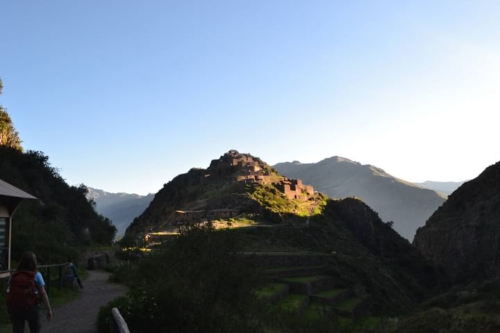
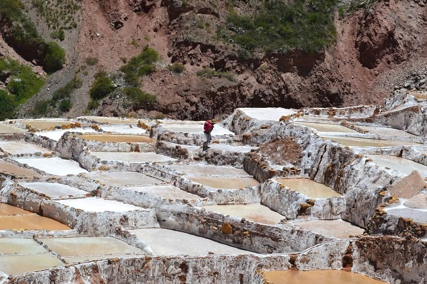

Sacred Valley Tour - Full Day
Sacred Valley Tour - Full Day
We pick you up from your hotel at 7:00 AM for a day spent discovering different Incan towns and vistas, including stops in chincheros, Moray, and Maras. We will also visit Urubamba for a wonderful buffet lunch, as well as Ollantaytambo and Pisaq, which feature beautiful views of the Andeas and native Quecha people. The tour should end around 7:00 PM.
Chincheros
Chinceros is a very traditional town full of local handicrafts and fabrics. The main attraction here is the archaeological complex, a functioning local market where bargaining and exchanging are still very common. Archaeologists in the 1960s discovered that some of the walls and architecture belong to a long-lost Incan palace.
Moray
A gigantic "amphitheater" of sorts, with each terrace featuring a specific microclimate. Moray hides the secret to Incan agriculture and features more than 20 different levels. We will spend approximately 1 hour on a guided tour, walking through all the terraces and learning first-hand one of the incredible places in Peru.
MARAS
Located in the upper Sacred Valley is the Salineras de Maras, a tiny river that pours out salty water into the Minas de Sal, or salt terraces. Here, the water evaporates little-by-little, leaving pools of salt. We will spend approximately 1 hour touring these incredible salt mines.
Urubamba
In the time of the Incas, Urubamba was an important agricultural center (especially a key producer of corn). Today, a beautiful countryside full of fruit trees, it is an excellent place to enjoy our buffet lunch before continuing on.
Ollantaytambo
The core of Ollantaytambo is a military fortress. Strategically, it is located between two mountains and provides good protection for the rest of the Sacred Valley. During our visit, we will see this military fortress, but also the temple of Inti (Sun Temple), bathes of Ñustas (Princess Baths), and Chullpas of Cachiccata (terraces).
The current town of Ollantaytambo is build on top of an ancient Incan town, where natives of deep-rooted ancestral customs live.
Pisac
Located on the slopes of the Intihuatan Hill, this town exemplifies the type of terracing done by the Incas. During our visit, we will visit an archaeological site featuring a quary, citadel, multiple towers, and military base. We will also see the largest Incan cemetery every discovered.
INCLUDED
Transportation: hotel → Sacred Valley → hotel
Buffet lunch (Urubamba)
Entrance tickets to Salineros Minas de Sal
Professional bilingual guide
NOT INCLUDED
Airfare
Tourist ticket (for accessing archaeological sites; approx 70 or 130 soles)
Tip